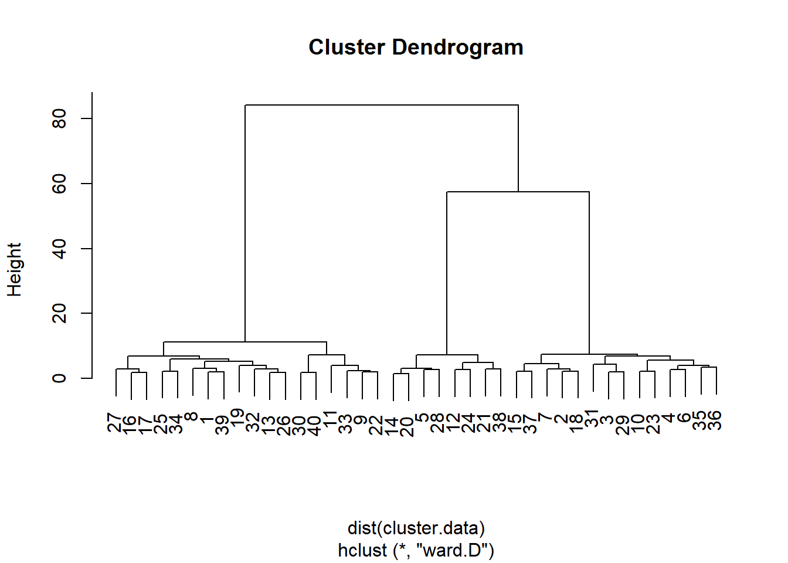

Análise de cluster para segmentação
Neste capítulo, você aprenderá como realizar uma análise de cluster e uma análise discriminante linear.
Uma análise de cluster trabalha em um grupo de observações que diferem entre si em várias dimensões. Ele encontrará clusters de observações no espaço n-dimensional, de modo que a semelhança de observações dentro de clusters seja a mais alta possível e a similaridade de observações entre clusters seja a mais baixa possível. Você sempre pode executar uma análise de cluster e pode solicitar qualquer número de clusters. O número máximo de clusters é o número total de observações. Nesse caso, cada observação será um cluster, mas isso não seria um cluster muito útil. O objetivo do agrupamento em cluster é encontrar um pequeno número de clusters que possam ser descritos de forma significativa por suas pontuações médias nas n dimensões. Em outras palavras, o objetivo é encontrar diferentes ‘perfis’ de observações.
A análise discriminante linear tenta prever uma variável categórica com base em várias variáveis independentes contínuas ou categóricas. É semelhante à regressão logística. Nós o usaremos para prever a associação de cluster de uma observação (conforme estabelecido pela análise de cluster) com base em algumas variáveis de segmentação (ou seja, outras informações que temos sobre as observações que não serviram de entrada na análise de cluster).
Analisaremos os dados de 40 entrevistados que avaliaram a importância de vários atributos da loja ao comprar equipamentos de escritório. Usaremos a análise de cluster para encontrar agrupamentos de observações, neste caso, agrupamentos de respondentes. Esses clusters terão perfis diferentes (por exemplo, um cluster pode atribuir importância à política de preços e devoluções, o outro pode atribuir importância à variedade de opções e qualidade de serviço). Em seguida, usaremos a análise discriminante linear para testar se podemos prever a associação ao cluster (ou seja, que tipo de comprador de equipamento de escritório alguém é) com base em várias características dos entrevistados (por exemplo, sua renda).
Dados
Importação
Analisaremos os dados de uma pesquisa na qual 40 entrevistados foram solicitados a avaliar a importância de vários atributos da loja ao comprar equipamentos. Faça o download dos dados aqui e importe-os para o R:
## -- Attaching packages -------------------------------------------------- tidyverse 1.3.0 --## v ggplot2 3.3.2 v purrr 0.3.4
## v tibble 3.0.3 v dplyr 1.0.0
## v tidyr 1.1.2 v stringr 1.4.0
## v readr 1.3.1 v forcats 0.5.0## -- Conflicts ----------------------------------------------------- tidyverse_conflicts() --
## x dplyr::filter() masks stats::filter()
## x dplyr::lag() masks stats::lag()Manipulação
## # A tibble: 5 x 10
## respondent_id variety_of_choi~ electronics furniture quality_of_serv~
## <dbl> <dbl> <dbl> <dbl> <dbl>
## 1 1 8 6 6 3
## 2 2 6 3 1 4
## 3 3 6 1 2 4
## 4 4 8 3 3 4
## 5 5 4 6 3 9
## # ... with 5 more variables: low_prices <dbl>, return_policy <dbl>,
## # professional <dbl>, income <dbl>, age <dbl>Temos 10 colunas ou variáveis em nossos dados:
- respondent_id é um identificador para nossas observações
- Os entrevistados classificaram a importância de cada um dos seguintes atributos em uma escala de 1 a 10: variety_of_choice, electronic, furniture, quality_of_service, low_prices, return_policy.
- professional: 1 para profissionais, 0 para não profissionais
- income: expresso em milhares de dólares
- age
A análise de cluster tentará identificar clusters com padrões semelhantes de classificações. A análise discriminante linear preverá a associação do cluster com base nas variáveis de segmentação (professional}, income}, e age}).
Como sempre, vamos fatorar as variáveis que devem ser tratadas como categóricas:
Recapitulação: importação e manipulação
Aqui está o que fizemos até agora, em uma sequência ordenada de operações canalizadas/pipe (faça o download dos dados aqui):
Análise de Cluster
Primeiro, realizaremos uma análise hierárquica de cluster para encontrar o número ideal de clusters. Depois disso, realizaremos uma análise de cluster não hierárquica e solicitaremos o número de clusters considerados ideais pela análise de cluster hierárquica. As variáveis que servirão de entrada para a análise de cluster são as classificações de importância dos atributos da loja.
Padronizar ou não ?
A primeira etapa de uma análise de cluster é decidir se padronizará as variáveis de entrada. A padronização não é necessária quando as variáveis de entrada são medidas na mesma escala ou quando as variáveis de entrada são os coeficientes obtidos por uma análise conjunta. Em outros casos, a padronização é necessária.
No nosso exemplo, todas as variáveis de entrada são medidas na mesma escala e, portanto, a padronização não é necessária. Se necessário, isso pode ser feito facilmente com mutate(newvar = scale(oldvar))).
Cluster hierárquico
Em seguida, criamos um novo conjunto de dados que inclui apenas as variáveis de entrada, ou seja, as classificações:
cluster.data <- equipment %>%
select(variety_of_choice, electronics, furniture, quality_of_service, low_prices, return_policy) # Selecione no conjunto de dados do equipamento apenas as variaveis com classificacoes padronizadasAgora, podemos prosseguir com o cluster hierárquico para determinar o número ideal de clusters:
# A funcao dist() cria uma matriz de dissimilaridade do nosso conjunto de dados e deve ser o primeiro argumento para a funcao hclust().
# No argumento do metodo, voce pode especificar o metodo a ser usado para armazenamento em cluster.
hierarchical.clustering <- hclust(dist(cluster.data), method = "ward.D") A análise de cluster é armazenada no objeto hierarchical.clustering e pode ser facilmente visualizada por um dendograma:

A partir desse dendograma, parece que podemos dividir as observações em dois, três ou seis grupos de observações. Vamos realizar um teste formal, a regra de parada de Duda-Hart, para ver quantos clusters devemos reter. Para isso, precisamos (instalar e) carregar o pacote NbClust}:
A tabela de regras de parada de Duda-Hart pode ser obtida da seguinte maneira:
duda <- NbClust(cluster.data, distance = "euclidean", method = "ward.D2", max.nc = 9, index = "duda")
pseudot2 <- NbClust(cluster.data, distance = "euclidean", method = "ward.D2", max.nc = 9, index = "pseudot2")
duda$All.index## 2 3 4 5 6 7 8 9
## 0.2997 0.7389 0.7540 0.5820 0.4229 0.7534 0.5899 0.7036## 2 3 4 5 6 7 8 9
## 46.7352 5.6545 3.9145 4.3091 5.4591 3.2728 3.4757 2.9490A sabedoria convencional para decidir o número de grupos com base na regra de parada de Duda-Hart é encontrar um dos maiores valores de Duda que corresponda a um baixo valor de pseudo-\(T^2\). No entanto, você também pode solicitar o número ideal de clusters, conforme sugerido pela regra de parada:
## Number_clusters Value_Index
## 3.0000 0.7389Nesse caso, o número ideal é três.
Cluster não-hierárquico
Agora, realizamos uma análise de cluster não hierárquica na qual solicitamos três clusters (conforme determinado pela análise de cluster hierárquica):
# existe um elemento aleatorio na analise de cluster
# isso significa que voce nem sempre obtera a mesma saida toda vez que fizer uma analise de cluster
# se voce deseja obter sempre a mesma saida, eh necessario corrigir o gerador de numeros aleatorios de R com o comando set.seed
set.seed (1)
# o argumento nstart deve ser incluido e definido como 25, mas sua explicacao esta fora do escopo deste tutorial
kmeans.clustering <- kmeans(cluster.data, 3, nstart = 25)Adicione ao conjunto de dados equipament} uma variável que indique a qual cluster uma observação pertence:
equipment <- equipment %>%
mutate(km.group = factor(kmeans.clustering$cluster, labels=c("cl1","cl2","cl3"))) # Fatore o indicador de cluster a partir do quadro de dados clustering k e adicione-o ao quadro de dados do equipamento.Inspeciona os clusters:
equipment %>%
group_by(km.group) %>% # agrupado por cluster (km.group)
summarise(count = n(),
variety = mean(variety_of_choice),
electronics = mean(electronics),
furniture = mean(furniture),
service = mean(quality_of_service),
prices = mean(low_prices),
return = mean(return_policy)) #Em seguida, pergunte pelo número de entrevistados e pelos meios das classificações.## `summarise()` ungrouping output (override with `.groups` argument)## # A tibble: 3 x 8
## km.group count variety electronics furniture service prices return
## <fct> <int> <dbl> <dbl> <dbl> <dbl> <dbl> <dbl>
## 1 cl1 14 6.93 2.79 1.43 3.5 8.29 6.29
## 2 cl2 18 9.11 6.06 5.78 2.39 3.67 3.17
## 3 cl3 8 5 4.38 1.75 8.5 2.5 4.38Vemos que:
- o cluster 1 atribui mais importância (do que outros clusters) à qualidade do serviço
- o cluster 2 atribui mais importância à variedade de opções
- o cluster 3 atribui mais importância a preços baixos
Também podemos testar se há diferenças significativas entre os clusters, por exemplo, na variedade de opções. Para isso, usamos uma ANOVA unidirecional:
# remotes::install_github("samuelfranssens/type3anova") # para instalar o pacote type3anova.
# Voce precisa do pacote de controles remotos para isso e o pacote para carro precisa ser instalado para que o pacote type3anova funcione
library(type3anova)
type3anova(lm(variety_of_choice ~ km.group, data=equipment))## # A tibble: 3 x 6
## term ss df1 df2 f pvalue
## <chr> <dbl> <dbl> <int> <dbl> <dbl>
## 1 (Intercept) 1757. 1 37 1335. 0
## 2 km.group 101. 2 37 38.5 0
## 3 Residuals 48.7 37 37 NA NAExistem diferenças significativas entre os clusters em importância associadas à variedade de opções, e isso faz sentido porque o objetivo da análise de clusters é maximizar as diferenças entre os clusters. Vamos acompanhar isso com o HSD de Tukey para ver exatamente quais meios diferem um do outro:
TukeyHSD(aov(variety_of_choice ~ km.group, data=equipment),
"km.group") # O primeiro argumento eh um objeto "aov", o segundo eh a nossa variavel independente.## Tukey multiple comparisons of means
## 95% family-wise confidence level
##
## Fit: aov(formula = variety_of_choice ~ km.group, data = equipment)
##
## $km.group
## diff lwr upr p adj
## cl2-cl1 2.182540 1.184332 3.1807470 0.0000145
## cl3-cl1 -1.928571 -3.170076 -0.6870668 0.0015154
## cl3-cl2 -4.111111 -5.301397 -2.9208248 0.0000000Vemos que em todos os meios, a diferença é significativa.
LDA Canônico
Na vida real, geralmente não sabemos o que os potenciais compradores consideram importante, mas temos uma ideia, por exemplo, de sua renda, idade e status profissional. Portanto, seria útil testar quão bem podemos prever a associação ao cluster (perfil de classificações de importância) com base nas características dos respondentes (renda, idade, profissional), que também são chamados de variáveis de segmentação. A fórmula preditiva poderia então ser usada para prever a associação ao cluster de novos compradores em potencial. Para encontrar a fórmula correta, usamos a análise discriminante linear (LDA). Mas primeiro vamos dar uma olhada nas médias de income, age, e professional por cluster:
equipment %>%
group_by(km.group) %>% # Agrupar equipamentos por cluster.
summarise(income = mean(income),
age = mean(age),
professional = mean(as.numeric(professional)-1)) ## `summarise()` ungrouping output (override with `.groups` argument)## # A tibble: 3 x 4
## km.group income age professional
## <fct> <dbl> <dbl> <dbl>
## 1 cl1 32.1 30.9 0.5
## 2 cl2 48.3 44.2 0.333
## 3 cl3 47.5 49 0.75Vemos que o cluster 1 e 2 são um tanto semelhantes em termos de renda e idade, mas diferem na medida em que são compostos por profissionais. O cluster 3 difere do cluster 1 e 2 por ser mais jovem e menos rico.
Agora podemos usar o LDA para testar o quão bem podemos prever a associação do cluster com base na renda, idade e profissional:
##
## Attaching package: 'MASS'## The following object is masked from 'package:dplyr':
##
## selectlda.cluster3 <- lda(km.group ~ income + age + professional, data=equipment, CV=TRUE) # CV = TRUE ensures that we can store the prediction of the LDA in the following step
equipment <- equipment %>%
mutate(class = factor(lda.cluster3$class, labels = c("lda1","lda2","lda3"))) # Save the prediction of the LDA as a factor. (The predictions are stored in lda.cluster3$class)Vamos ver como o LDA tem se saído bem:
ct <- table(equipment$km.group, equipment$class) # how many observations in each cluster were correctly predicted to be in that cluster by LDA?
ct##
## lda1 lda2 lda3
## cl1 12 2 0
## cl2 3 12 3
## cl3 2 3 3Vemos, por exemplo, que para as 14 observações no cluster 1, o LDA prevê corretamente que 12 estão no cluster 1, mas prediz erroneamente que 2 estão no cluster 2 e 0 estão no cluster 3.
A precisão geral da previsão pode ser obtida da seguinte forma:
##
## lda1 lda2 lda3
## cl1 0.300 0.050 0.000
## cl2 0.075 0.300 0.075
## cl3 0.050 0.075 0.075## [1] 0.675Digamos que desejamos prever a participação no cluster de novas pessoas para as quais temos apenas renda, idade e status profissional, mas não sua participação no cluster. Poderíamos olhar para a fórmula que o LDA derivou dos dados de pessoas para as quais tínhamos membros do cluster:
lda.cluster3.formula <- lda(km.group ~ income + age + professional, data=equipment, CV=FALSE) # CV = FALSE ensures that we view the formula that we can use for prediction
lda.cluster3.formula## Call:
## lda(km.group ~ income + age + professional, data = equipment,
## CV = FALSE)
##
## Prior probabilities of groups:
## cl1 cl2 cl3
## 0.35 0.45 0.20
##
## Group means:
## income age professionalprofessional
## cl1 32.14286 30.92857 0.5000000
## cl2 48.33333 44.22222 0.3333333
## cl3 47.50000 49.00000 0.7500000
##
## Coefficients of linear discriminants:
## LD1 LD2
## income 0.02718175 -0.04456448
## age 0.08017200 0.03838914
## professionalprofessional 0.42492950 2.10385035
##
## Proportion of trace:
## LD1 LD2
## 0.7776 0.2224Vemos que o LDA manteve duas dimensões discriminantes (e é aqui que difere da regressão logística, que é unidimensional). A primeira dimensão explica 77,76 por cento da variância em km.group, a segunda dimensão explica 22,24 por cento da variância em km.group. A tabela com coeficientes nos dá a fórmula para cada dimensão:
Pontuação Discriminante 1 = 0,03 × renda + 0,08 x idade + 0,42 × Pontuação profissional e discriminante 2 = -0,04 × renda + 0,04 × idade + 2,1 × profissional.
Para atribuir novas observações a um determinado cluster, primeiro precisamos calcular as pontuações discriminantes médias dos clusters e de cada nova observação (preenchendo os valores (médios) de renda, idade e profissional de cada cluster ou observação no discriminante ), calcule as distâncias geométricas entre as pontuações discriminantes das novas observações e as pontuações discriminantes médias dos clusters e, finalmente, atribua cada observação ao cluster que está mais próximo no espaço geométrico. Isso é uma chatice, por isso temos sorte de o R fornecer uma maneira simples de fazer isso.
Vamos criar algumas novas observações primeiro:
# the tibble function can be used to create a new data frame
new_data <- tibble(income = c(65, 65, 35, 35), # to define a variable within the data frame, first provide the name of the variable (income), then provide the values
age = c(20, 35, 45, 60),
professional = c("professional","non-professional","non-professional","professional"))
# check out the new data:
new_data## # A tibble: 4 x 3
## income age professional
## <dbl> <dbl> <chr>
## 1 65 20 professional
## 2 65 35 non-professional
## 3 35 45 non-professional
## 4 35 60 professionalAgora vamos prever a associação do cluster para essas “novas” pessoas:
new_data <- new_data %>%
mutate(prediction = predict(lda.cluster3.formula, new_data)$class)
# Create a new column called prediction in the new_data data frame and store in that the prediction,
# accessed by $class, for the new_data based on the formula from the LDA based on the old data (use the LDA where CV = FALSE).
# have a look at the prediction:
new_data## # A tibble: 4 x 4
## income age professional prediction
## <dbl> <dbl> <chr> <fct>
## 1 65 20 professional cl1
## 2 65 35 non-professional cl2
## 3 35 45 non-professional cl2
## 4 35 60 professional cl3